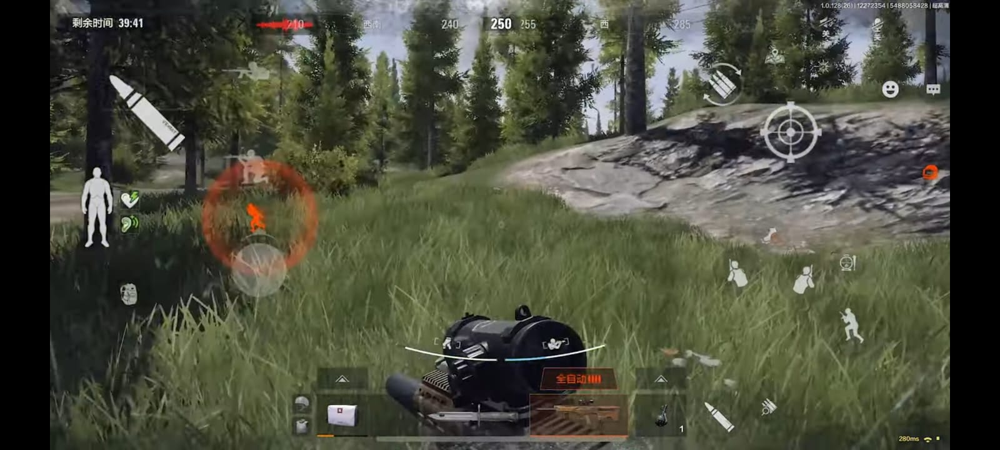
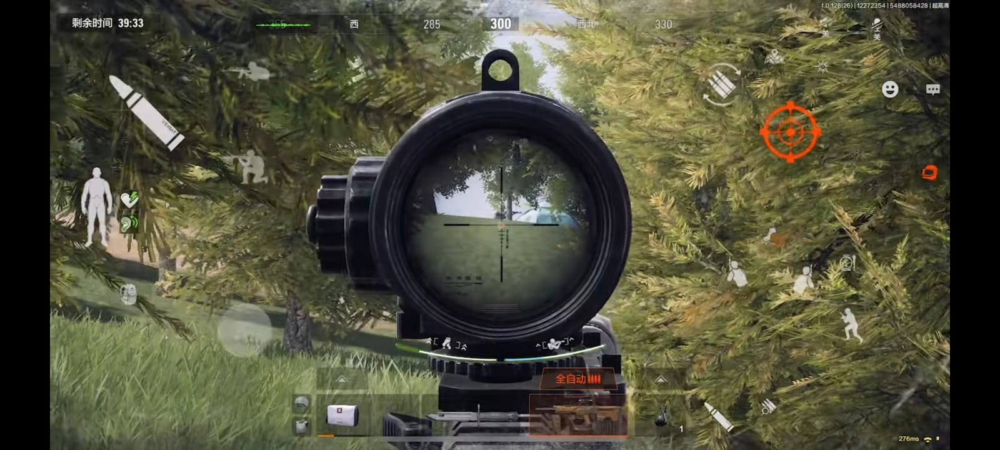
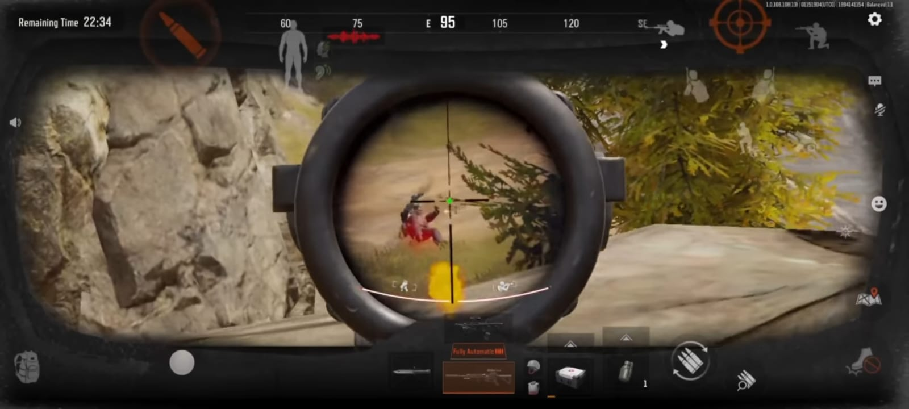

Apa Itu Arena Breakout
Secara keseluruhan, Arena Breakout merupakan game bergenre extraction shooter atau survival, di mana player harus mengatur strategi, mengumpulkan perkakas dari musuh, merakit senjata, serta mencari jalan keluar sebagai pejuang bertahan terakhir. Elemen-elemen gameplay tersebut lah yang menciptakan tipe permainan realistis yang disenangi gamer.
Kesimpulan saya pada saat bermain game arena breakout yaitu yang pertama harus mempunyai mental yang kuat karena game ini game yang sangat susah dimainkan oleh banyak orang, yang kedua yaitu jangan serakah apapila serakah bisa kena ambisnya oleh teman dan musuh, dan yang terakhir yaitu game ini tidak boleh bermain secara agresif karena bisa langsung mati,karena jika mati barang-barang kita tidak bisa balik lagi.
Contoh Gambar Gameplay nya


